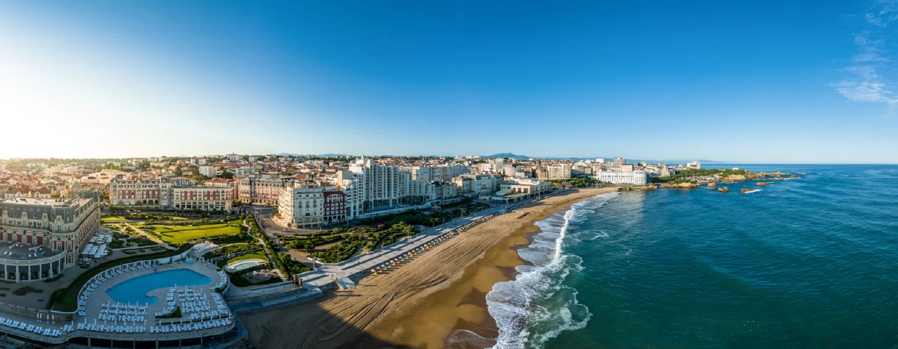
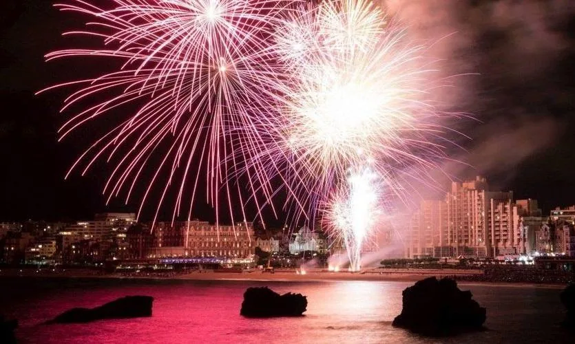
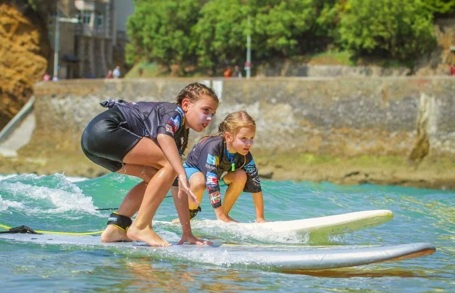
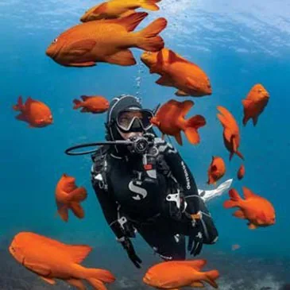
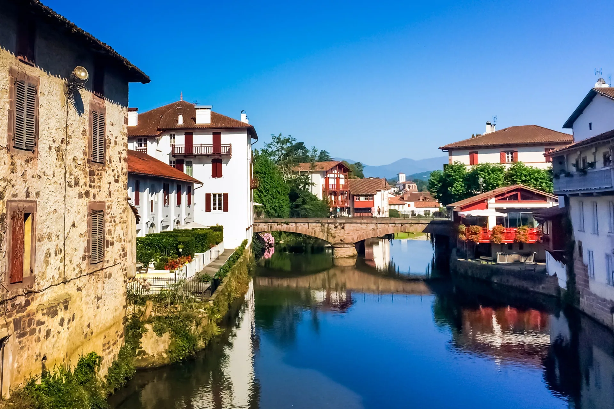
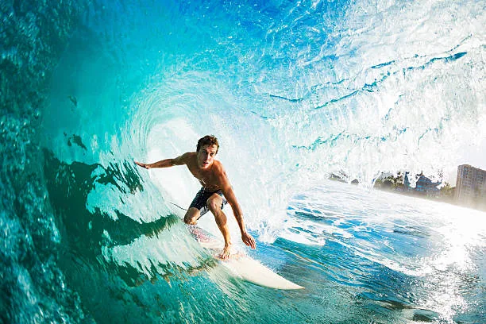
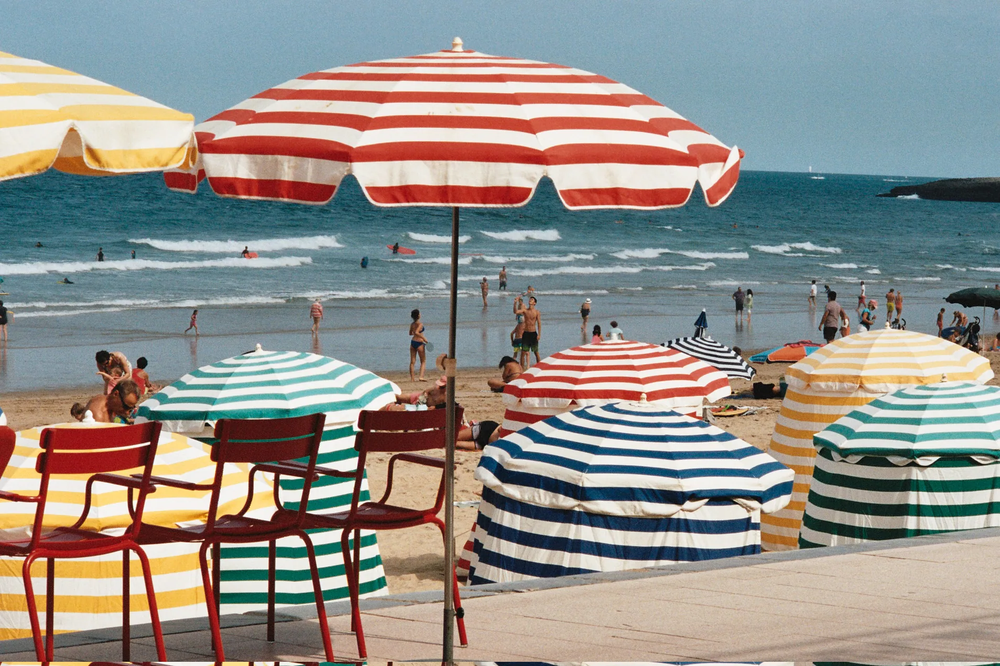
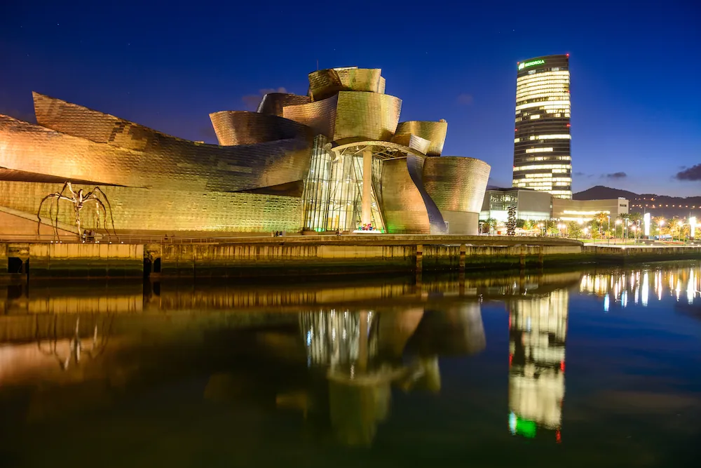

08. Évènements
Expériences
Séjourner à la ‘Folie Boulart’ est une expérience intense et inoubliable.
Outre le luxe du château, le charme de Biarritz, l’énergie de l’océan et l’art de vivre du pays basque vous envouteront.
Laissez-vous séduire par nos expériences uniques pour plus de plaisirs et de découvertes
L’océan, les montagnes, la route panoramique le long de la corniche basque, les villages traditionnels, les remparts de Bayonne et l’élégance de Biarritz sont quelques-uns des nombreux trésors qui raviront votre cœur et vos sens.











Il existe une multitude de façons de vivre le Pays-Basque qui vous permettront de découvrir les différentes facettes de cette région captivante.
Nous avons donc demandé à de vrais passionnés de nous ouvrir les portes de leur domaine.
Certains vous feront partager leur amour de la cuisine françaises et régionale ; d’autres vous proposeront un programme de remise en forme adapté à vos aspirations et des soins de bien-être sur mesure qui puisent dans les richesses de la nature.
Nous faisons également appel aux meilleurs professionnels du pays-basque pour vous divertir et animer vos soirées évènements.
Enfin, nous levons le voile sur les aspects les plus mystérieux de la culture basque afin que vous puissiez vivre des expériences extraordinaires.